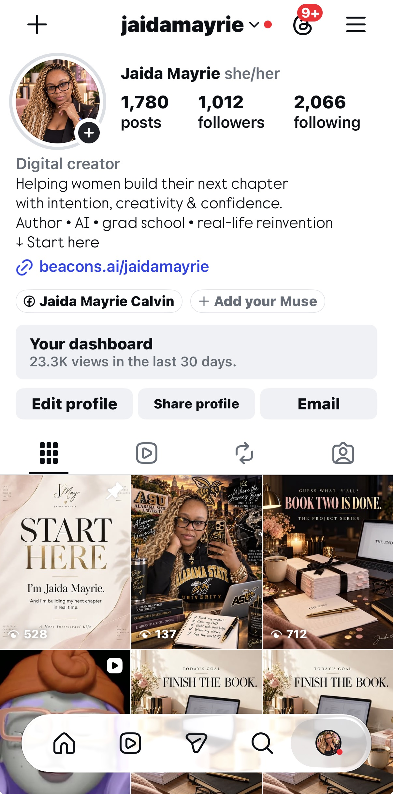
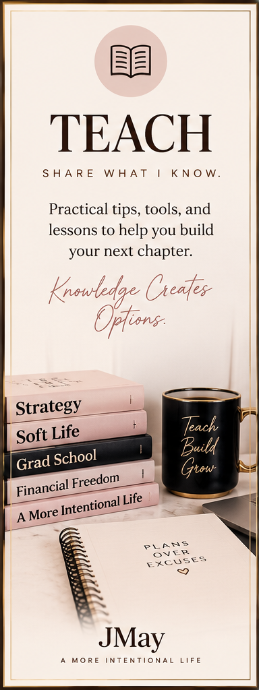
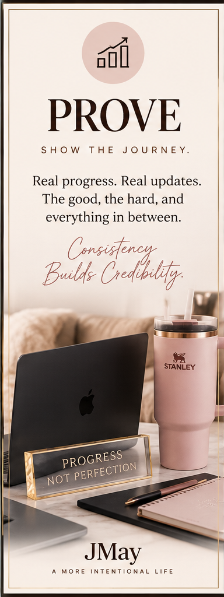
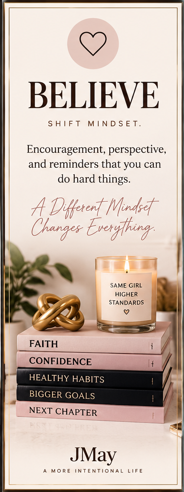
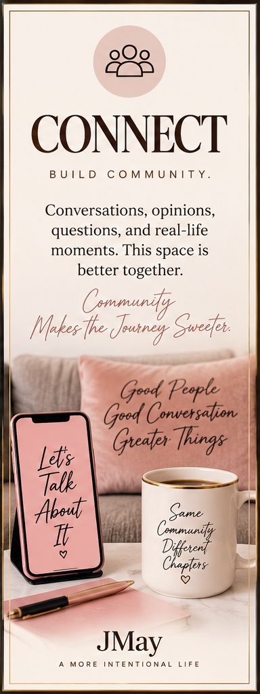
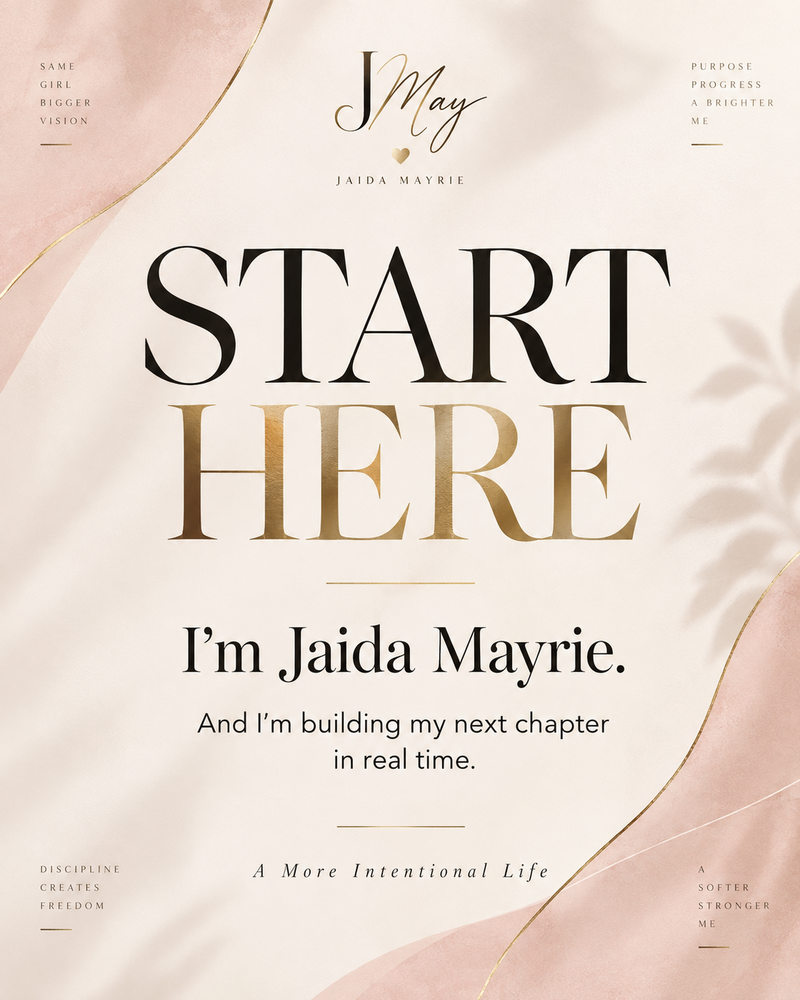
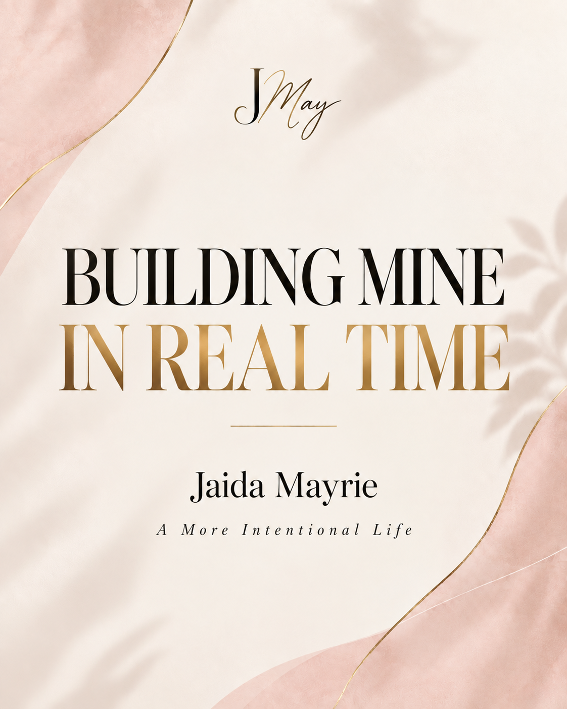
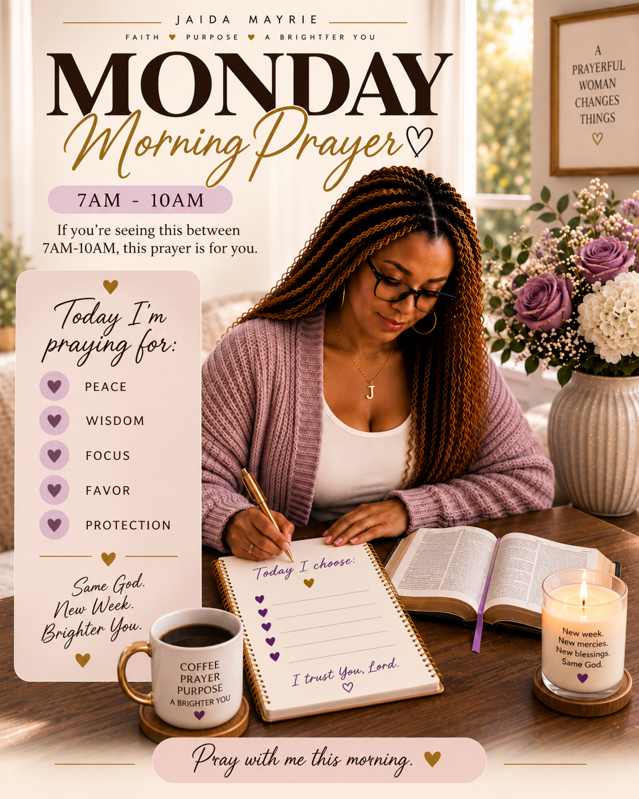

POSITIONING
Intentional Reinvention
Building your next chapter without waiting until you have it all figured out.
BRAND REBUILD · DAY ONE
One focused day turned scattered ideas into a clear brand, a content system, refreshed platforms, and a plan I can actually execute.
Helping women build their next chapter with intention, creativity & confidence.
THE SHIFT
I stopped trying to make every interest fit into a random content bucket and built one umbrella that could hold the whole journey: writing, grad school, AI, creator life, routines, faith, and real-life reinvention.
POSITIONING
Building your next chapter without waiting until you have it all figured out.
BRAND LINE
A simple idea connecting ambition, softness, creativity, and everyday life.
BRAND STATEMENT
Helping women build their next chapter with intention, creativity & confidence.
WHAT I BUILT
The strategy did not stay in a document. I turned it into profiles, content, systems, and a clearer digital presence.
01
Defined the Jaida Mayrie brand around Intentional Reinvention, with “A More Intentional Life” as the brand line and a clear audience-focused brand statement.
Intentional Reinvention
A More Intentional Life
Helping women build their next chapter with intention, creativity & confidence.
02
Aligned Facebook, Instagram, and TikTok around the same identity, messaging, visual direction, and “Start Here” experience.

03
Rebuilt my link-in-bio experience to connect my books, Goodreads, creator work, brand partnerships, collaborations, and business inquiries.
04
Created four content pillars: TEACH, PROVE, BELIEVE, and CONNECT — giving every piece of content a clear job.




05
Created a pinned content journey: START HERE → BUILDING MINE IN REAL TIME → BUILD YOUR NEXT CHAPTER WITH ME.


06
Refreshed my Morning Prayer visual system and created a new direction for afternoon educational content and evening community content.

HOW I BUILT THIS
I used AI to help me move faster from ideas to execution, but I stayed responsible for the strategy, decisions, review, corrections, and final direction.
CHATGPT
Used ChatGPT to work through my positioning, messaging, content pillars, brand direction, platform strategy, and the plan for this case study.
CODEX CLOUD
Connected Codex to my GitHub repository and used it to create the first HTML and CSS foundation for this website.
GITHUB
Used a feature branch and commits to track changes, preserve working versions, and keep the project organized.
VS CODE + CODEX
Continued developing locally in VS Code with Codex while learning how the HTML and CSS worked, reviewing changes before committing them.
LIVE SERVER
Ran the website locally, reviewed each section in the browser, found layout issues, and made corrections before saving new versions.
JAIDA
Made the decisions. Chose the strategy, shaped and approved the messaging, selected the visuals, corrected code, added assets manually, reviewed the AI output, and decided what actually shipped.